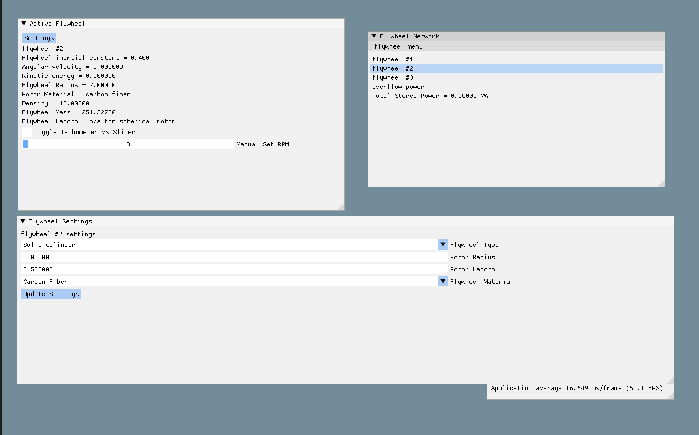
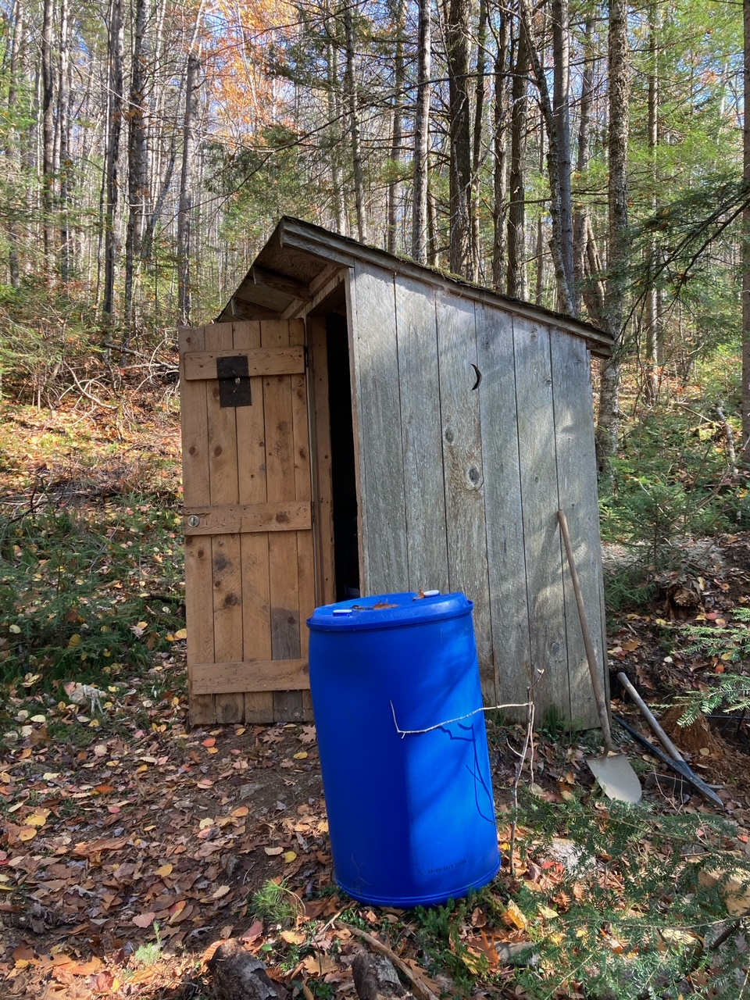
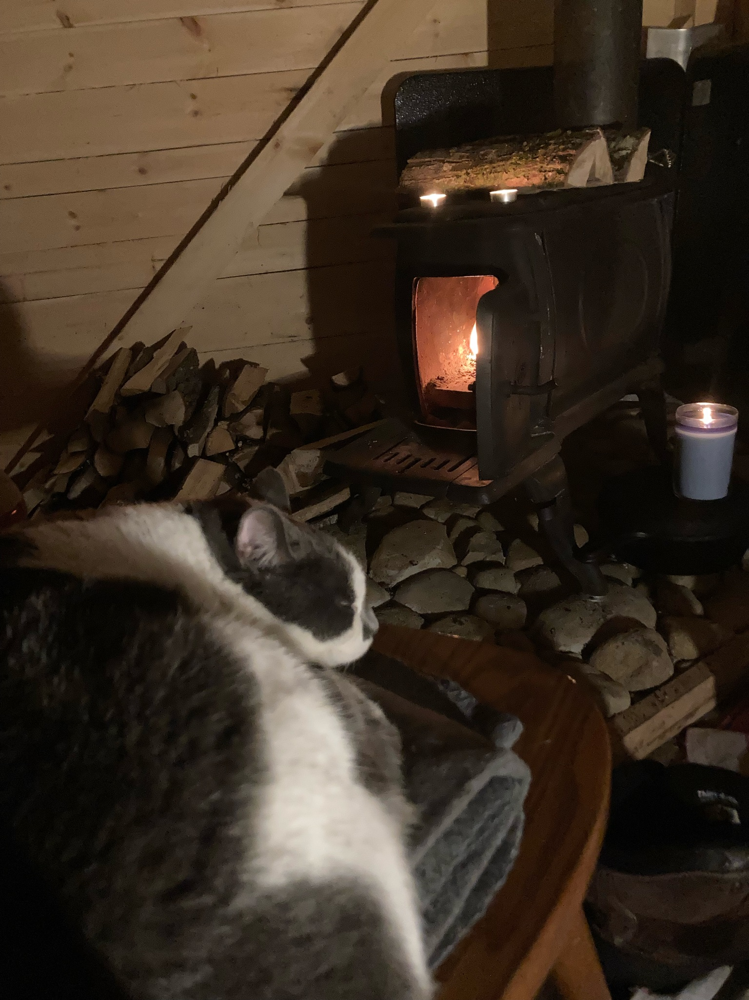

Highlighted Projects
Flywheel Network Manager
Grid energy storage is a rapidly developing field and finding new ways to store energy in times of
excess production is key to improving grid efficiency.
Project Highlights:
Flywheel network tracking/storage, power outputs
Customizable flywheel material, rotor shape, volume and network size
Flywheel velocity monitoring using hall effect sensor-based arduino tachometer
Application fully designed in C/C++ using Dear ImGUI front end framework
This project gave me exposure to graphics rendering and the windows API
To-Do's:
Multiple network/sensor handling
Error logging system, critical error failsafes, fault tolerances
UX: image rendering, drag&drop network visualization tool
Integration of motor/generator with flywheel using live current
A repository for this program can be found here


Hot Potty
Have you ever lived in the woods?
A very simple arduino project that senses temperature and activates a heating element in my off-grid
toilet
in the winter
Keeps toilet functional by preventing it from freezing and exploding (again).
Requires relay and power source for heating element
Feel free to ask me how I got a flushing toilet to work in the middle of the woods. It was quite a fun
project.
Arduino INO file can be accessed here.
Pet Eclipse Project
Do you want to know the exact date that you and your pet are the same age?
Programmed using Python
Cats and dogs "age" faster in their earlier years, and different sized dogs have their own aging
equations. Intercepts of piecewise functions were challenging to
calculate, especially since leap-days are involved
and do not scale evenly with "pet years".
Easily adaptable to any species given aging relative to human years
My cat Mags and I shared a Pet Eclipse Day on August 27/2018 when we were both precisely 25 years and
136 days old.
Unfortunately we did not celebrate
Algorithm is completed, www.PetEclipseDay.com will be live soon!
Don't forget to celebrate your Pet Eclipse Day! Email me if you'd like to know your eclipse day
is before the site is live!
